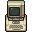
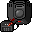
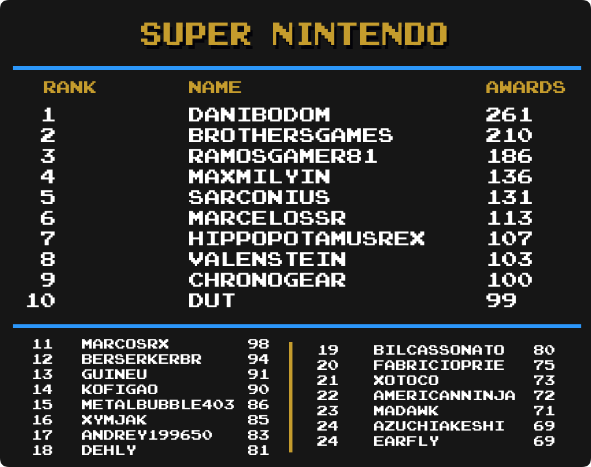

Top Masteries
 By
Amir96lx
By
Amir96lx
Contents
- Intro
- Current Champions
- Notable Milestones
-
Category Rankings
- Total Awards
- Total Awards (Excluding Hacks)
- Event Awards
- Site Awards
- Hack Awards
- Homebrew Awards
- Subset Awards
- Amstrad CPC
- Apple II
- Arcade
- Arcadia 2001
- Arduboy
- Atari 2600
- Atari Jaguar CD
- Dreamcast
- Elektor TV Games Computer
- Fairchild Channel F
- Game Boy
- Game Boy Advance
- Game Boy Color
- Game Gear
- GameCube
- Interton VC 4000
- Master System
- Mega Drive
- Mega Duck
- Nintendo 64
- NES
- Nintendo DS
- Nintendo DSi
- PC Engine
- PC Engine CD
- PC-8000/8800
- PlayStation
- PlayStation 2
- PlayStation Portable
- Pokémon Mini
- Sega Saturn
- Sega CD
- SG-1000
- SNES
- Uzebox
- Virtual Boy
- WASM-4
- Watara Supervision
Intro
We are going to take a look at another metric for greatness, Mastery Awards. Mastery awards are given to users when they complete every achievement for a given set in hardcore mode. Users wear mastery awards as a badge of honor on their profile page representing all the hard work they put into truly becoming a master of the game.
Below we will take a look at which users rank among the best with the most mastery awards in several categories well as notable updates from the previous month to each individual category. Check to see how you rank among the rest of the community members.
Special thanks to  Nydaxn for creating the ranking image templates.
Nydaxn for creating the ranking image templates.
* Data as of September 1st 2024.
Current Champions
|
|
|
Mastery Awards | |
|---|---|---|---|
 Total Awards
| Amir96lx | 1232 | |
| Event Awards
|  Hotscrock Hotscrock | 36 | |
| Site Awards
|  ladynadiad ladynadiad | 34 | |
| Hacks
|  HolyShinx HolyShinx | 356 | |
| Homebrews
| Amir96lx | 306 | |
| Subsets
|  GreninjaMan GreninjaMan | 40 | |
 3DO Interactive Multiplayer
|
 Vyach59 Vyach59 | 15 | |
 Amstrad CPC
|  SilentsongEQ SilentsongEQ | 21 | |
 Apple II
|  Sylrifaide Sylrifaide | 48 | |
 Arcade
|  LordBBH LordBBH | 122 | |
 Arcadia 2001
|  Maximdraco Maximdraco | 29 | |
 Arduboy
|  NEOMAR NEOMAR | 54 | |
 Atari 2600
|  PMniac PMniac | 126 | |
 Atari 7800
| PMniac | 21 | |
 Atari Jaguar
| PMniac | 12 | |
 Atari Jaguar CD
|  sludgemastic sludgemastic | 9 | |
 Atari Lynx
|  Jungon Jungon | 15 | |
 ColecoVision
| PMniac | 24 | |
 Dreamcast
|  ChrisGold97 ChrisGold97 | 27 | |
 Elektor TV Games Computer
|
Amir96lx Maximdraco sludgemastic
|
25 | |
 Fairchild Channel F
| Maximdraco | 33 | |
 Game Boy
|  Shootzy Shootzy | 164 | |
 Game Boy Advance
|  bonecrusher1022 bonecrusher1022 | 195 | |
 Game Boy Color
|  valeforge valeforge | 146 | |
 Game Gear
| Nydaxn | 96 | |
 GameCube
|
Amir96lx Kaiserlucas Kaiserlucas Namine Namine
|
16 | |
 Intellivision
| Jungon | 27 | |
 Interton VC 4000
|  wizface2137 wizface2137 | 34 | |
 Magnavox Odyssey 2
| Maximdraco | 25 | |
 Master System
| Jungon | 109 | |
 Mega Drive
|  DUT DUT | 181 | |
 Mega Duck
| Jungon | 14 | |
 MSX
|  guineu guineu | 14 | |
 Nintendo 64
|  AstroFennec AstroFennec | 62 | |
 Neo Geo CD
| LordBBH | 7 | |
 Neo Geo Pocket
|  MelodyAsh MelodyAsh | 16 | |
 NES
|  mx01 mx01 | 301 | |
 Nintendo DS
|  Olafur Olafur | 147 | |
 Nintendo DSi
|  MiningMario MiningMario | 45 | |
 PC Engine
|  Nanashi Nanashi | 28 | |
 PC Engine CD
| Nanashi | 21 | |
 PC-8000/8800
|  Orph Orph | 15 | |
 PC-FX
| Nanashi | 13 | |
 PlayStation
|  FBiDev FBiDev | 128 | |
 PlayStation 2
|  Myanjp Myanjp | 74 | |
 PlayStation Portable
|  Waishler Waishler | 64 | |
 Pokémon Mini
| Sylrifaide | 37 | |
 Sega 32X
| DUT | 8 | |
 Sega Saturn
|  Sarconius Sarconius | 20 | |
 Sega CD
|  Drakub Drakub | 20 | |
 SG-1000
| Jungon | 62 | |
 SNES
|  danibodom danibodom | 261 | |
 Uzebox
|  GregHouse007 GregHouse007 | 35 | |
 Vectrex
| Jungon | 17 | |
 Virtual Boy
|
Jungon Grahamtams Grahamtams
| 18 | |
 WASM-4
| Amir96lx | 55 | |
 Watara Supervision
| Sarconius | 52 | |
 WonderSwan
| Nanashi | 11 |
Notable Milestones
1200 Mastery Awards
| Amir96lx |
900 Mastery Awards
 AuburnRDM AuburnRDM |
700 Mastery Awards
 Sutarion Sutarion |
 ChocoMilk ChocoMilk |
600 Mastery Awards
 pitapocket17 pitapocket17 |
400 Mastery Awards
 Tayadaoc Tayadaoc |
 SamsamDaGameMan SamsamDaGameMan |
Orph |
| Nanashi |
300 Mastery Awards
 zandro zandro |
 Tiagofsp Tiagofsp |
 thatoneguy1851 thatoneguy1851 |
 ruuzilla ruuzilla |
 MonkeyBug MonkeyBug |
 Hexadigital Hexadigital |
| Grahamtams |
 Adenothe Adenothe |
 Acrostiche Acrostiche |
200 Mastery Awards
 AceMoon1974 AceMoon1974 |
 CiaoTime CiaoTime |
 DeanXP DeanXP |
 dizzykei dizzykei |
 GolfistaVW GolfistaVW |
 Lalilulelo Lalilulelo |
| LordBBH |
 mefaun mefaun |
 R3ZM4N R3ZM4N |
 RevJohn RevJohn |
100 Mastery Awards
 BaronVonMetz
BaronVonMetz benjaminmcp0
benjaminmcp0 Bobafettjm
Bobafettjm Coleram
Coleram coolsheff
coolsheff DaleRedfield
DaleRedfield Davski
Davski exdb49
exdb49 Glyphid
Glyphid itsjustm0nty
itsjustm0nty JosephGH70
JosephGH70 kljd87
kljd87 KollegaKot
KollegaKot krehztim
krehztim Lanius
Lanius lizstar
lizstar Maoski
Maoski Mindez
Mindez NeoZeroDestiny
NeoZeroDestiny Noisyneighbour
Noisyneighbour Orosius
Orosius Portaladz85
Portaladz85 Psychosteve
Psychosteve Riskbreaker48
Riskbreaker48 Roaflin
Roaflin RodLima
RodLima SoulSoralis
SoulSoralis Turtlewax85
Turtlewax85 wesleywithoutat
wesleywithoutat Xanderland1a
Xanderland1a YoureWithStupid
YoureWithStupid ZhenNexus
ZhenNexus Zombie
Zombie Zytahui
ZytahuiCategory Rankings
Total Awards

-
Amir96lx has taken 1st place with 1232 total mastery awards.
-
guineu has moved up 1 spot and is in 2nd place.
-
 Bendyhuman has moved up 1 spot and is in 3rd place.
Bendyhuman has moved up 1 spot and is in 3rd place. -
 Lonoke31 has moved up 1 spot and is in 4th place.
Lonoke31 has moved up 1 spot and is in 4th place. -
NEOMAR has moved up 1 spot and is in 5th place.
-
Sarconius has moved up 1 spot and is in 6th place.
-
Jungon has moved up 2 spots and is in 7th place.
-
AuburnRDM has moved up 1 spot and is in 9th place.
-
 Blazekickn has moved up 1 spot and is in 10th place.
Blazekickn has moved up 1 spot and is in 10th place. -
 Andrey199650 has moved up 1 spot and is in 11th place.
Andrey199650 has moved up 1 spot and is in 11th place. -
 MaxMilyin has moved up 1 spot and is in 12th place.
MaxMilyin has moved up 1 spot and is in 12th place. -
 AllKindsOfJames has moved up 1 spot and is in 13th place.
AllKindsOfJames has moved up 1 spot and is in 13th place. -
 MaddieKittyTV has moved up 2 spots and is in 14th place.
MaddieKittyTV has moved up 2 spots and is in 14th place. -
MiningMario has moved up 1 spot and is in 16th place.
-
Sutarion has moved up 3 spots and is in 17th place.
-
ChocoMilk has moved up 4 spots and is in 19th place.
-
 Timmay has moved up 2 spots and is in 22nd place.
Timmay has moved up 2 spots and is in 22nd place. -
sludgemastic has moved up 2 spots and is in 23rd place.
-
 MarioKness has made it into the top 25 and is in 24th place.
MarioKness has made it into the top 25 and is in 24th place. -
 Pixelach has made it into the top 25 and is in 25th place.
Pixelach has made it into the top 25 and is in 25th place.
Total Awards (Excluding Hacks)

-
Amir96lx has taken 1st place with 1184 total mastery awards.
-
guineu has moved up 1 spot and is in 2nd place.
-
Jungon has moved up 2 spots and is in 3rd place.
-
NEOMAR has moved up 2 spots and is in 4th place.
-
 Whoops has moved up 1 spot and is in 6th place.
Whoops has moved up 1 spot and is in 6th place. -
Lonoke31 has moved up 1 spot and is in 7th place.
-
Bendyhuman has moved up 1 spot and is in 8th place.
-
Andrey199650 has moved up 1 spot and is in 9th place.
-
AuburnRDM has moved up 1 spot and is in 10th place.
-
AllKindsOfJames has moved up 1 spot and is in 11th place.
-
MaxMilyin has moved up 1 spot and is in 12th place.
-
 ChronoGear has moved up 1 spot and is in 13th place.
ChronoGear has moved up 1 spot and is in 13th place. -
Blazekickn has moved up 1 spot and is in 14th place.
-
ChocoMilk has moved up 6 spots and is in 15th place.
-
MiningMario has moved up 2 spots and is in 16th place.
-
sludgemastic has moved up 2 spots and is in 17th place.
-
Sutarion has moved up 4 spots and is in 18th place.
-
MaddieKittyTV has moved up 1 spot and is tied for 19th place.
-
Timmay has moved up 2 spots and is in 21st place.
-
Pixelach has moved up 2 spots and is in 22nd place.
-
 ShadwSonic has moved up 2 spots and is in 23rd place.
ShadwSonic has moved up 2 spots and is in 23rd place. -
 BrothersGames has made it into the top 25 and is in 24th place.
BrothersGames has made it into the top 25 and is in 24th place. -
MarioKness has made it into the top 25 and is in 25th place.
Event Awards

-
Hotscrock remains in 1st with 36 total mastery awards.
-
NEOMAR has moved up 3 spots and is tied for 8th place.
-
Sutarion has moved up 2 spots and is in 15th place.
-
 amine456 has moved up 1 spot and is in a 3-way tie for 18th place.
amine456 has moved up 1 spot and is in a 3-way tie for 18th place. -
 Whynot15 has moved up 2 spots and is in a 3-way tie for 18th place.
Whynot15 has moved up 2 spots and is in a 3-way tie for 18th place. -
 PenguGG has made it into the top 25 and is in a 5-way tie for 23rd place.
PenguGG has made it into the top 25 and is in a 5-way tie for 23rd place.
Site Awards

-
ladynadiad remains in 1st with 34 total mastery awards.
-
 voiceofautumn has moved up 3 spots and is tied for 8th place.
voiceofautumn has moved up 3 spots and is tied for 8th place. -
Hexadigital has moved up 4 spots and is in a 3-way tie for 13th place.
-
 SporyTike has moved up 1 spot and is in a 3-way tie for 13th place.
SporyTike has moved up 1 spot and is in a 3-way tie for 13th place. -
Tayadaoc has moved up 1 spot and is tied for 19th place.
-
 ThatAmericanSlacker has moved up 1 spot and is tied for 19th place.
ThatAmericanSlacker has moved up 1 spot and is tied for 19th place.
Hack Awards

-
HolyShinx remains in 1st with 356 total mastery awards.
-
 Aquator has moved up 1 spot and is tied for 5th place.
Aquator has moved up 1 spot and is tied for 5th place. -
Lonoke31 has moved up 1 spot and is in 9th place.
-
 TheClassicOne88 has moved up 1 spot and is in 14th place.
TheClassicOne88 has moved up 1 spot and is in 14th place. -
 Renan007 has moved up 1 spot and is in 18th place.
Renan007 has moved up 1 spot and is in 18th place. -
zandro has moved up 2 spots and is in 19th place.
-
 SuperMeatBro has moved up 3 spots and is in 22nd place.
SuperMeatBro has moved up 3 spots and is in 22nd place. -
 MarioX4 has made it into the top 25 and is in 25th place.
MarioX4 has made it into the top 25 and is in 25th place.
Homebrew Awards

-
Amir96lx remains in 1st with 306 total mastery awards.
-
AuburnRDM has moved up 1 spot and is in 3rd place.
-
AllKindsOfJames has moved up 1 spot and is in 5th place.
-
MiningMario has moved up 1 spot and is in 6th place.
-
Lonoke31 has moved up 2 spots and is in 7th place.
-
ChocoMilk has moved up 1 spot and is tied for 8th place.
-
guineu has moved up 1 spot and is in 10th place.
-
Timmay has moved up 5 spots and is in 11th place.
-
Sutarion has moved up 3 spots and is in 12th place.
-
MaddieKittyTV has moved up 1 spot and is in 16th place.
-
Blazekickn has moved up 1 spot and is in 17th place.
-
 Advent has moved up 1 spot and is in 18th place.
Advent has moved up 1 spot and is in 18th place. -
 BlotchJBMR has moved up 2 spots and is in 19th place.
BlotchJBMR has moved up 2 spots and is in 19th place. -
Maximdraco has moved up 1 spot and is tied for 21st place.
-
 Retrokaiser has moved up 1 spot and is tied for 21st place.
Retrokaiser has moved up 1 spot and is tied for 21st place. -
 Justrokman has moved up 1 spot and is in 23rd place.
Justrokman has moved up 1 spot and is in 23rd place. -
 Crystalline343 has made it into the top 25 and is tied for 24th place.
Crystalline343 has made it into the top 25 and is tied for 24th place. -
GregHouse007 has made it into the top 25 and is tied for 24th place.
Subset Awards
-
GreninjaMan remains in 1st with 40 total mastery awards.
-
 FerretPlayingPS4 has moved up 4 spots and is tied for 5th place.
FerretPlayingPS4 has moved up 4 spots and is tied for 5th place. -
ChronoGear has moved up 2 spots and is in a 5-way tie for 10th place.
-
 PrimalGiratina has moved up 4 spots and is in a 5-way tie for 10th place.
PrimalGiratina has moved up 4 spots and is in a 5-way tie for 10th place. -
 TheJohanx has moved up 1 spot and is tied for 15th place.
TheJohanx has moved up 1 spot and is tied for 15th place. -
Lonoke31 has moved up 5 spots and is tied for 17th place.
-
 benit149 has moved up 3 spots and is in a 8-way tie for 19th place.
benit149 has moved up 3 spots and is in a 8-way tie for 19th place. -
 Kinghippo44 has made it into the top 25 and is in a 8-way tie for 19th place.
Kinghippo44 has made it into the top 25 and is in a 8-way tie for 19th place.
Amstrad CPC
-
SilentsongEQ remains in 1st with 21 total mastery awards.
-
Sutarion has made it into the top 25 and is in a 3-way tie for 19th place.
Apple II

-
Sylrifaide remains in 1st with 48 total mastery awards.
-
 DrunkenSuperman has moved up 2 spots and is in 4th place.
DrunkenSuperman has moved up 2 spots and is in 4th place. -
NEOMAR has moved up 5 spots and is in a 4-way tie for 11th place.
-
 Aelesto74 has made it into the top 25 and is in a 5-way tie for 18th place.
Aelesto74 has made it into the top 25 and is in a 5-way tie for 18th place. -
 CodeMonkeyJeff has made it into the top 25 and is in a 10-way tie for 23rd place.
CodeMonkeyJeff has made it into the top 25 and is in a 10-way tie for 23rd place.
Arcade

-
LordBBH remains in 1st with 122 total mastery awards.
-
 missiray has moved up 2 spots and is in 2nd place.
missiray has moved up 2 spots and is in 2nd place. -
DUT has moved up 2 spots and is in 3rd place.
-
 AliasMcDoe has moved up 4 spots and is in 4th place.
AliasMcDoe has moved up 4 spots and is in 4th place. -
 PablloVittar has moved up 1 spot and is in 5th place.
PablloVittar has moved up 1 spot and is in 5th place. -
 Tyiiop has moved up 1 spot and is in 6th place.
Tyiiop has moved up 1 spot and is in 6th place. -
 MarceloSSR has moved up 3 spots and is in 7th place.
MarceloSSR has moved up 3 spots and is in 7th place. -
 ramosgamer81 has moved up 3 spots and is in 8th place.
ramosgamer81 has moved up 3 spots and is in 8th place. -
 Barra has moved up 14 spots and is in 9th place.
Barra has moved up 14 spots and is in 9th place. -
 IantasGames1995 has moved up 3 spots and is in 10th place.
IantasGames1995 has moved up 3 spots and is in 10th place. -
 Dazzer123456 has moved up 7 spots and is in 11th place.
Dazzer123456 has moved up 7 spots and is in 11th place. -
 Fanonos has moved up 2 spots and is in 12th place.
Fanonos has moved up 2 spots and is in 12th place. -
 Alexavelino123 has moved up 3 spots and is in a 3-way tie for 13th place.
Alexavelino123 has moved up 3 spots and is in a 3-way tie for 13th place. -
 Chatnoir has moved up 3 spots and is in a 3-way tie for 13th place.
Chatnoir has moved up 3 spots and is in a 3-way tie for 13th place. -
guineu has moved up 5 spots and is in a 3-way tie for 13th place.
-
 AkumaTNT has moved up 5 spots and is tied for 16th place.
AkumaTNT has moved up 5 spots and is tied for 16th place. -
 renanbrj has moved up 5 spots and is tied for 16th place.
renanbrj has moved up 5 spots and is tied for 16th place. -
 Cronos74 has made it into the top 25 and is in 18th place.
Cronos74 has made it into the top 25 and is in 18th place. -
 CthulhuThe3rd has made it into the top 25 and is in 19th place.
CthulhuThe3rd has made it into the top 25 and is in 19th place. -
 dorayaki has moved up 4 spots and is in 20th place.
dorayaki has moved up 4 spots and is in 20th place. -
 Dj4ir has made it into the top 25 and is tied for 21st place.
Dj4ir has made it into the top 25 and is tied for 21st place. -
 fabiotwotwo has moved up 3 spots and is tied for 21st place.
fabiotwotwo has moved up 3 spots and is tied for 21st place. -
AllKindsOfJames has made it into the top 25 and is in a 4-way tie for 23rd place.
-
 INNUENDO has made it into the top 25 and is in a 4-way tie for 23rd place.
INNUENDO has made it into the top 25 and is in a 4-way tie for 23rd place. -
 jaydee03 has made it into the top 25 and is in a 4-way tie for 23rd place.
jaydee03 has made it into the top 25 and is in a 4-way tie for 23rd place.
Arcadia 2001

-
Maximdraco remains in 1st with 29 total mastery awards.
-
ChocoMilk has moved up 3 spots and is in a 3-way tie for 9th place.
-
Timmay has moved up 1 spot and is in a 3-way tie for 12th place.
Arduboy

-
NEOMAR remains in 1st with 54 total mastery awards.
-
Amir96lx has moved up 3 spots and is tied for 2nd place.
-
GregHouse007 has moved up 10 spots and is in 4th place.
-
MiningMario has moved up 1 spot and is tied for 13th place.
-
Whoops has moved up 2 spots and is in 15th place.
-
Timmay has moved up 1 spot and is in 17th place.
-
Sutarion has moved up 1 spot and is in 18th place.
-
 FlareEX has moved up 1 spot and is tied for 19th place.
FlareEX has moved up 1 spot and is tied for 19th place. -
 tmap has moved up 1 spot and is tied for 19th place.
tmap has moved up 1 spot and is tied for 19th place. -
AuburnRDM has moved up 1 spot and is tied for 21st place.
-
ChocoMilk has moved up 3 spots and is tied for 21st place.
-
Crystalline343 has made it into the top 25 and is in a 3-way tie for 25th place.
Atari 2600

-
PMniac remains in 1st with 126 total mastery awards.
-
Jungon has moved up 1 spot and is tied for 6th place.
-
 Botch has moved up 1 spot and is in 12th place.
Botch has moved up 1 spot and is in 12th place. -
 jaguarrn has moved up 5 spots and is in 14th place.
jaguarrn has moved up 5 spots and is in 14th place. -
 KNess has made it into the top 25 and is tied for 18th place.
KNess has made it into the top 25 and is tied for 18th place. -
AceMoon1974 has made it into the top 25 and is tied for 21st place.
-
 BroccoliRob has made it into the top 25 and is in a 4-way tie for 25th place.
BroccoliRob has made it into the top 25 and is in a 4-way tie for 25th place.
Atari Jaguar CD
-
sludgemastic remains in 1st with 9 total mastery awards.
-
Amir96lx has moved up 1 spot and is tied for 2nd place.
-
ChocoMilk has moved up 1 spot and is tied for 2nd place.
-
Whoops has moved up 1 spot and is in 5th place.
-
 Burgins has moved up 1 spot and is tied for 6th place.
Burgins has moved up 1 spot and is tied for 6th place. -
MaddieKittyTV has moved up 1 spot and is tied for 6th place.
-
 Dogmeatman has moved up 1 spot and is tied for 8th place.
Dogmeatman has moved up 1 spot and is tied for 8th place. -
 YahwehTzVaoth has moved up 1 spot and is tied for 8th place.
YahwehTzVaoth has moved up 1 spot and is tied for 8th place. -
Advent has moved up 1 spot and is in a 9-way tie for 10th place.
-
 Brandovsky has moved up 1 spot and is in a 9-way tie for 10th place.
Brandovsky has moved up 1 spot and is in a 9-way tie for 10th place. -
MarioKness has moved up 1 spot and is in a 9-way tie for 10th place.
-
MiningMario has moved up 1 spot and is in a 9-way tie for 10th place.
-
 orchidcnr has moved up 1 spot and is in a 9-way tie for 10th place.
orchidcnr has moved up 1 spot and is in a 9-way tie for 10th place. -
Sutarion has moved up 1 spot and is in a 9-way tie for 10th place.
-
Timmay has moved up 1 spot and is in a 9-way tie for 10th place.
-
 Xerus has moved up 1 spot and is in a 9-way tie for 10th place.
Xerus has moved up 1 spot and is in a 9-way tie for 10th place. -
 ZintheDestroyr has made it into the top 25 and is in a 9-way tie for 10th place.
ZintheDestroyr has made it into the top 25 and is in a 9-way tie for 10th place. -
 Alakatrore has made it into the top 25 and is in a 56-way tie for 19th place.
Alakatrore has made it into the top 25 and is in a 56-way tie for 19th place.
Dreamcast

-
ChrisGold97 remains in 1st with 27 total mastery awards.
-
 AlleycatAndrea has moved up 3 spots and is in a 3-way tie for 13th place.
AlleycatAndrea has moved up 3 spots and is in a 3-way tie for 13th place. -
ChronoGear has moved up 1 spot and is in a 6-way tie for 16th place.
-
 ElectricAngel has moved up 1 spot and is in a 6-way tie for 16th place.
ElectricAngel has moved up 1 spot and is in a 6-way tie for 16th place. -
 Kiko has moved up 1 spot and is in a 6-way tie for 16th place.
Kiko has moved up 1 spot and is in a 6-way tie for 16th place. -
 Poefred has moved up 1 spot and is in a 6-way tie for 16th place.
Poefred has moved up 1 spot and is in a 6-way tie for 16th place. -
ShadwSonic has moved up 1 spot and is in a 6-way tie for 16th place.
-
 soltyd has moved up 1 spot and is in a 6-way tie for 16th place.
soltyd has moved up 1 spot and is in a 6-way tie for 16th place. -
Lonoke31 has moved up 1 spot and is in a 8-way tie for 22nd place.
-
 PhAnToM88IcE has moved up 1 spot and is in a 8-way tie for 22nd place.
PhAnToM88IcE has moved up 1 spot and is in a 8-way tie for 22nd place. -
 RuanzinhoGameplays has moved up 1 spot and is in a 8-way tie for 22nd place.
RuanzinhoGameplays has moved up 1 spot and is in a 8-way tie for 22nd place. -
 Scout has made it into the top 25 and is in a 8-way tie for 22nd place.
Scout has made it into the top 25 and is in a 8-way tie for 22nd place.
Elektor TV Games Computer

-
Amir96lx remains in 1st with 25 total mastery awards.
-
Botch has moved up 2 spots and is in a 3-way tie for 7th place.
-
ChocoMilk has moved up 1 spot and is tied for 14th place.
Fairchild Channel F

-
Maximdraco remains in 1st with 33 total mastery awards.
-
Botch has moved up 2 spots and is tied for 4th place.
-
 Nicholacci has made it into the top 25 and is in a 3-way tie for 8th place.
Nicholacci has made it into the top 25 and is in a 3-way tie for 8th place. -
 4lexGrey has moved up 2 spots and is in a 4-way tie for 19th place.
4lexGrey has moved up 2 spots and is in a 4-way tie for 19th place.
Game Boy
-
Shootzy remains in 1st with 164 total mastery awards.
-
BrothersGames has moved up 1 spot and is in 5th place.
-
NEOMAR has moved up 2 spots and is in 6th place.
-
Andrey199650 has moved up 1 spot and is tied for 8th place.
-
Lonoke31 has moved up 1 spot and is tied for 8th place.
-
AllKindsOfJames has moved up 1 spot and is in 10th place.
-
AuburnRDM has moved up 3 spots and is in 11th place.
-
 metalbubble403 has moved up 1 spot and is in 14th place.
metalbubble403 has moved up 1 spot and is in 14th place. -
Whoops has moved up 2 spots and is in 15th place.
-
Amir96lx has moved up 4 spots and is in 17th place.
-
Sutarion has made it into the top 25 and is in 21st place.
-
SamsamDaGameMan has moved up 2 spots and is in a 3-way tie for 23rd place.
Game Boy Advance
-
bonecrusher1022 remains in 1st with 195 total mastery awards.
-
voiceofautumn has moved up 1 spot and is in 6th place.
-
 Tiagoxxx has moved up 1 spot and is in 7th place.
Tiagoxxx has moved up 1 spot and is in 7th place. -
Blazekickn has moved up 1 spot and is in 8th place.
-
Bendyhuman has moved up 1 spot and is in 9th place.
-
ShadwSonic has moved up 1 spot and is in 10th place.
-
 BatFastardJordy has moved up 2 spots and is in 11th place.
BatFastardJordy has moved up 2 spots and is in 11th place. -
NEOMAR has moved up 1 spot and is in 13th place.
-
AllKindsOfJames has moved up 2 spots and is tied for 14th place.
-
Whoops has moved up 1 spot and is in 16th place.
-
 DustinRomero1268 has moved up 1 spot and is in 17th place.
DustinRomero1268 has moved up 1 spot and is in 17th place. -
Amir96lx has moved up 2 spots and is tied for 18th place.
-
 cochese788 has moved up 1 spot and is tied for 20th place.
cochese788 has moved up 1 spot and is tied for 20th place. -
MaddieKittyTV has moved up 1 spot and is tied for 20th place.
-
ChocoMilk has made it into the top 25 and is in a 3-way tie for 22nd place.
-
 Xymjak has moved up 1 spot and is in a 3-way tie for 22nd place.
Xymjak has moved up 1 spot and is in a 3-way tie for 22nd place.
Game Boy Color
-
valeforge remains in 1st with 146 total mastery awards.
-
metalbubble403 has moved up 1 spot and is in 3rd place.
-
Bendyhuman has moved up 1 spot and is in 4th place.
-
Lonoke31 has moved up 1 spot and is tied for 5th place.
-
Whoops has moved up 2 spots and is tied for 5th place.
-
Amir96lx has moved up 2 spots and is in a 3-way tie for 7th place.
-
Andrey199650 has moved up 2 spots and is in a 3-way tie for 7th place.
-
NEOMAR has moved up 1 spot and is in 10th place.
-
AllKindsOfJames has moved up 1 spot and is tied for 11th place.
-
AuburnRDM has moved up 1 spot and is tied for 11th place.
-
bonecrusher1022 has moved up 1 spot and is tied for 13th place.
-
MaddieKittyTV has moved up 1 spot and is tied for 13th place.
-
 NickGoat1990 has moved up 1 spot and is in 15th place.
NickGoat1990 has moved up 1 spot and is in 15th place. -
Timmay has moved up 2 spots and is in 16th place.
-
 Kayesay has moved up 1 spot and is in 18th place.
Kayesay has moved up 1 spot and is in 18th place. -
Shootzy has moved up 1 spot and is in 19th place.
-
Maximdraco has moved up 1 spot and is in 20th place.
-
Blazekickn has moved up 1 spot and is in a 5-way tie for 21st place.
-
BlotchJBMR has moved up 1 spot and is in a 5-way tie for 21st place.
-
Sutarion has moved up 1 spot and is in a 5-way tie for 21st place.
-
 xenoriddley has moved up 1 spot and is in a 5-way tie for 21st place.
xenoriddley has moved up 1 spot and is in a 5-way tie for 21st place. -
 Xotoco has made it into the top 25 and is in a 5-way tie for 21st place.
Xotoco has made it into the top 25 and is in a 5-way tie for 21st place.
Game Gear
-
Nydaxn remains in 1st with 96 total mastery awards.
-
Sarconius has moved up 1 spot and is tied for 7th place.
-
Tayadaoc has moved up 1 spot and is tied for 7th place.
-
Andrey199650 has moved up 1 spot and is in 9th place.
-
DUT has moved up 7 spots and is tied for 10th place.
-
Lonoke31 has moved up 1 spot and is tied for 17th place.
-
Whoops has moved up 1 spot and is tied for 17th place.
-
FlareEX has moved up 6 spots and is in a 5-way tie for 19th place.
-
metalbubble403 has made it into the top 25 and is tied for 24th place.
GameCube
-
Amir96lx remains in 1st with 16 total mastery awards.
-
 WanderingHeiho has moved up 5 spots and is in a 4-way tie for 1st place.
WanderingHeiho has moved up 5 spots and is in a 4-way tie for 1st place. -
 Pielord90 has made it into the top 25 and is tied for 5th place.
Pielord90 has made it into the top 25 and is tied for 5th place. -
 grapeisgreat has made it into the top 25 and is in a 3-way tie for 7th place.
grapeisgreat has made it into the top 25 and is in a 3-way tie for 7th place. -
 HanBunno has moved up 2 spots and is in a 3-way tie for 7th place.
HanBunno has moved up 2 spots and is in a 3-way tie for 7th place. -
 Truhxy has made it into the top 25 and is in a 3-way tie for 7th place.
Truhxy has made it into the top 25 and is in a 3-way tie for 7th place. -
 HazzGrunge has made it into the top 25 and is tied for 10th place.
HazzGrunge has made it into the top 25 and is tied for 10th place. -
 Darkfang114 has made it into the top 25 and is in a 4-way tie for 12th place.
Darkfang114 has made it into the top 25 and is in a 4-way tie for 12th place. -
 dustl has made it into the top 25 and is in a 4-way tie for 12th place.
dustl has made it into the top 25 and is in a 4-way tie for 12th place. -
Sarconius has moved up 5 spots and is in a 4-way tie for 12th place.
-
 Skrat has made it into the top 25 and is in a 4-way tie for 12th place.
Skrat has made it into the top 25 and is in a 4-way tie for 12th place. -
 Excessiveiser has made it into the top 25 and is in a 6-way tie for 16th place.
Excessiveiser has made it into the top 25 and is in a 6-way tie for 16th place. -
Aquator has made it into the top 25 and is in a 19-way tie for 22nd place.
-
bonecrusher1022 has made it into the top 25 and is in a 19-way tie for 22nd place.
-
DeanXP has made it into the top 25 and is in a 19-way tie for 22nd place.
Interton VC 4000

-
wizface2137 remains in 1st with 34 total mastery awards.
-
Amir96lx has moved up 1 spot and is tied for 8th place.
-
MaddieKittyTV has moved up 8 spots and is in a 3-way tie for 14th place.
-
4lexGrey has made it into the top 25 and is in a 4-way tie for 22nd place.
-
 Amzolg has made it into the top 25 and is in a 4-way tie for 22nd place.
Amzolg has made it into the top 25 and is in a 4-way tie for 22nd place.
Master System

-
Jungon remains in 1st with 109 total mastery awards.
-
sludgemastic has moved up 1 spot and is in 4th place.
-
 PlagueKBR has moved up 2 spots and is in 5th place.
PlagueKBR has moved up 2 spots and is in 5th place. -
 ramiroabreu has moved up 2 spots and is tied for 6th place.
ramiroabreu has moved up 2 spots and is tied for 6th place. -
Waishler has moved up 2 spots and is tied for 6th place.
-
 Nekhros has moved up 2 spots and is in 8th place.
Nekhros has moved up 2 spots and is in 8th place. -
 Ernesto has moved up 2 spots and is in a 4-way tie for 9th place.
Ernesto has moved up 2 spots and is in a 4-way tie for 9th place. -
 KTH has moved up 2 spots and is in a 4-way tie for 9th place.
KTH has moved up 2 spots and is in a 4-way tie for 9th place. -
Nanashi has moved up 2 spots and is in a 4-way tie for 9th place.
-
Whoops has moved up 2 spots and is in a 4-way tie for 9th place.
-
AllKindsOfJames has moved up 2 spots and is tied for 13th place.
-
tmap has moved up 2 spots and is tied for 13th place.
-
 Beulu79 has moved up 2 spots and is tied for 15th place.
Beulu79 has moved up 2 spots and is tied for 15th place. -
 DavidYTBR2 has moved up 2 spots and is tied for 15th place.
DavidYTBR2 has moved up 2 spots and is tied for 15th place. -
Amir96lx has moved up 2 spots and is tied for 17th place.
-
pitapocket17 has moved up 2 spots and is tied for 17th place.
-
Andrey199650 has moved up 3 spots and is in a 3-way tie for 19th place.
-
Bendyhuman has moved up 4 spots and is in a 3-way tie for 19th place.
-
AuburnRDM has moved up 1 spot and is in a 6-way tie for 22nd place.
-
guineu has moved up 2 spots and is in a 6-way tie for 22nd place.
-
Lonoke31 has made it into the top 25 and is in a 6-way tie for 22nd place.
-
 mudrik has made it into the top 25 and is in a 6-way tie for 22nd place.
mudrik has made it into the top 25 and is in a 6-way tie for 22nd place.
Mega Drive

-
DUT remains in 1st with 181 total mastery awards.
-
Jungon has moved up 1 spot and is in 3rd place.
-
ramosgamer81 has moved up 2 spots and is in 4th place.
-
 azulejo has moved up 2 spots and is in 5th place.
azulejo has moved up 2 spots and is in 5th place. -
 Nightstorm has moved up 2 spots and is in 6th place.
Nightstorm has moved up 2 spots and is in 6th place. -
tmap has moved up 2 spots and is in 7th place.
-
Fanonos has moved up 2 spots and is in 8th place.
-
MaxMilyin has moved up 2 spots and is in 9th place.
-
 Nevanos has moved up 2 spots and is in 10th place.
Nevanos has moved up 2 spots and is in 10th place. -
 BOP95 has moved up 2 spots and is in 11th place.
BOP95 has moved up 2 spots and is in 11th place. -
Sarconius has moved up 2 spots and is in 12th place.
-
 an7xuan has moved up 2 spots and is in a 3-way tie for 13th place.
an7xuan has moved up 2 spots and is in a 3-way tie for 13th place. -
Andrey199650 has moved up 4 spots and is in a 3-way tie for 13th place.
-
 Kron has moved up 1 spot and is in a 3-way tie for 13th place.
Kron has moved up 1 spot and is in a 3-way tie for 13th place. -
 TindalosKeeper has moved up 1 spot and is in 16th place.
TindalosKeeper has moved up 1 spot and is in 16th place. -
 AxelViex has moved up 2 spots and is tied for 17th place.
AxelViex has moved up 2 spots and is tied for 17th place. -
Pixelach has moved up 2 spots and is tied for 17th place.
-
 BerserkerBR has moved up 3 spots and is tied for 19th place.
BerserkerBR has moved up 3 spots and is tied for 19th place. -
 drakonos85 has moved up 3 spots and is tied for 19th place.
drakonos85 has moved up 3 spots and is tied for 19th place. -
Xymjak has moved up 3 spots and is in 21st place.
-
 celsoaffini has moved up 3 spots and is tied for 22nd place.
celsoaffini has moved up 3 spots and is tied for 22nd place. -
 JuniorArievilo has made it into the top 25 and is tied for 22nd place.
JuniorArievilo has made it into the top 25 and is tied for 22nd place. -
BrothersGames has made it into the top 25 and is in a 3-way tie for 24th place.
-
 fianovale has made it into the top 25 and is in a 3-way tie for 24th place.
fianovale has made it into the top 25 and is in a 3-way tie for 24th place.
Mega Duck

-
Jungon remains in 1st with 14 total mastery awards.
-
MiningMario has moved up 1 spot and is in 5th place.
-
 Jaeger42 has moved up 1 spot and is tied for 6th place.
Jaeger42 has moved up 1 spot and is tied for 6th place. -
Whoops has moved up 1 spot and is tied for 6th place.
-
AllKindsOfJames has moved up 1 spot and is in a 8-way tie for 8th place.
-
AuburnRDM has moved up 1 spot and is in a 8-way tie for 8th place.
-
 Bownly has moved up 1 spot and is in a 8-way tie for 8th place.
Bownly has moved up 1 spot and is in a 8-way tie for 8th place. -
Lonoke31 has moved up 1 spot and is in a 8-way tie for 8th place.
-
NEOMAR has moved up 1 spot and is in a 8-way tie for 8th place.
-
soltyd has moved up 1 spot and is in a 8-way tie for 8th place.
-
 TheRealBillHicks has moved up 1 spot and is in a 8-way tie for 8th place.
TheRealBillHicks has moved up 1 spot and is in a 8-way tie for 8th place. -
Timmay has moved up 1 spot and is in a 8-way tie for 8th place.
-
Bendyhuman has moved up 9 spots and is in a 8-way tie for 16th place.
-
Beulu79 has made it into the top 25 and is in a 25-way tie for 24th place.
Nintendo 64

-
AstroFennec remains in 1st with 62 total mastery awards.
-
ChronoGear has moved up 1 spot and is tied for 2nd place.
-
Sarconius has moved up 1 spot and is in 4th place.
-
MaddieKittyTV has moved up 2 spots and is in a 3-way tie for 17th place.
-
Andrey199650 has moved up 2 spots and is in a 3-way tie for 22nd place.
NES

-
mx01 remains in 1st with 301 total mastery awards.
-
Andrey199650 has moved up 1 spot and is in 13th place.
-
 Artie7386 has moved up 1 spot and is in 14th place.
Artie7386 has moved up 1 spot and is in 14th place. -
guineu has moved up 1 spot and is tied for 15th place.
-
 HippopotamusRex has moved up 1 spot and is tied for 15th place.
HippopotamusRex has moved up 1 spot and is tied for 15th place. -
 sylar632 has moved up 1 spot and is tied for 17th place.
sylar632 has moved up 1 spot and is tied for 17th place. -
 Veritasu has moved up 1 spot and is tied for 17th place.
Veritasu has moved up 1 spot and is tied for 17th place. -
 Golem has moved up 1 spot and is tied for 19th place.
Golem has moved up 1 spot and is tied for 19th place. -
Pixelach has moved up 1 spot and is tied for 19th place.
-
FlareEX has moved up 1 spot and is tied for 21st place.
-
 Shroomer has moved up 1 spot and is tied for 21st place.
Shroomer has moved up 1 spot and is tied for 21st place. -
NEOMAR has moved up 1 spot and is in 23rd place.
-
 gnarblast has made it into the top 25 and is in 24th place.
gnarblast has made it into the top 25 and is in 24th place. -
SamsamDaGameMan has made it into the top 25 and is in 25th place.
Nintendo DS
-
Olafur remains in 1st with 147 total mastery awards.
-
NEOMAR has moved up 2 spots and is in a 3-way tie for 7th place.
-
Amir96lx has moved up 1 spot and is in a 4-way tie for 11th place.
-
Lonoke31 has moved up 5 spots and is in a 4-way tie for 11th place.
-
Blazekickn has moved up 1 spot and is tied for 18th place.
-
GreninjaMan has moved up 1 spot and is tied for 18th place.
-
mudrik has moved up 1 spot and is in 20th place.
-
 LinkToutencarton has moved up 1 spot and is tied for 21st place.
LinkToutencarton has moved up 1 spot and is tied for 21st place. -
 TheLooseGroose has moved up 1 spot and is tied for 21st place.
TheLooseGroose has moved up 1 spot and is tied for 21st place. -
 Thanks has moved up 1 spot and is in 23rd place.
Thanks has moved up 1 spot and is in 23rd place. -
Acrostiche has moved up 1 spot and is in a 3-way tie for 24th place.
-
MarioKness has made it into the top 25 and is in a 3-way tie for 24th place.
Nintendo DSi

-
MiningMario remains in 1st with 45 total mastery awards.
-
Pixelach has moved up 1 spot and is in 7th place.
-
 nikola11 has moved up 1 spot and is in a 3-way tie for 8th place.
nikola11 has moved up 1 spot and is in a 3-way tie for 8th place. -
 SuperRaph64 has made it into the top 25 and is in a 3-way tie for 8th place.
SuperRaph64 has made it into the top 25 and is in a 3-way tie for 8th place. -
NEOMAR has moved up 2 spots and is in a 3-way tie for 11th place.
PC Engine

-
Nanashi has taken 1st place with 28 total mastery awards.
-
Jungon has moved up 2 spots and is in 2nd place.
-
MaxMilyin has moved up 2 spots and is in 3rd place.
-
 323GONZALEZ1990 has moved up 3 spots and is in a 4-way tie for 4th place.
323GONZALEZ1990 has moved up 3 spots and is in a 4-way tie for 4th place. -
LordBBH has moved up 5 spots and is in a 4-way tie for 4th place.
-
NEOMAR has moved up 2 spots and is in a 4-way tie for 4th place.
-
 XashTheStampede has moved up 2 spots and is in a 4-way tie for 4th place.
XashTheStampede has moved up 2 spots and is in a 4-way tie for 4th place. -
 IzaNamiZX has moved up 6 spots and is in 8th place.
IzaNamiZX has moved up 6 spots and is in 8th place. -
Sarconius has moved up 2 spots and is tied for 9th place.
-
 SeredaVadim has moved up 2 spots and is tied for 9th place.
SeredaVadim has moved up 2 spots and is tied for 9th place. -
guineu has moved up 2 spots and is in 11th place.
-
 earfly has moved up 3 spots and is in a 3-way tie for 12th place.
earfly has moved up 3 spots and is in a 3-way tie for 12th place. -
 KnockerKrazy has moved up 3 spots and is in a 3-way tie for 12th place.
KnockerKrazy has moved up 3 spots and is in a 3-way tie for 12th place. -
 Mapa589 has moved up 3 spots and is in a 3-way tie for 12th place.
Mapa589 has moved up 3 spots and is in a 3-way tie for 12th place. -
Amir96lx has moved up 3 spots and is in a 3-way tie for 15th place.
-
 tencerjeddy has moved up 3 spots and is in a 3-way tie for 15th place.
tencerjeddy has moved up 3 spots and is in a 3-way tie for 15th place. -
 Transistor has moved up 3 spots and is in a 3-way tie for 15th place.
Transistor has moved up 3 spots and is in a 3-way tie for 15th place. -
AllKindsOfJames has moved up 3 spots and is in a 8-way tie for 18th place.
-
azulejo has moved up 3 spots and is in a 8-way tie for 18th place.
-
 Hexcreed has moved up 3 spots and is in a 8-way tie for 18th place.
Hexcreed has moved up 3 spots and is in a 8-way tie for 18th place. -
pitapocket17 has moved up 3 spots and is in a 8-way tie for 18th place.
-
Pixelach has moved up 3 spots and is in a 8-way tie for 18th place.
-
 Prota has made it into the top 25 and is in a 8-way tie for 18th place.
Prota has made it into the top 25 and is in a 8-way tie for 18th place. -
 Shinrashinobi has made it into the top 25 and is in a 8-way tie for 18th place.
Shinrashinobi has made it into the top 25 and is in a 8-way tie for 18th place. -
 Thoreau has made it into the top 25 and is in a 8-way tie for 18th place.
Thoreau has made it into the top 25 and is in a 8-way tie for 18th place.
PC Engine CD
-
Nanashi has taken 1st place with 21 total mastery awards.
-
NEOMAR has moved up 1 spot and is in 4th place.
-
 Annonith has moved up 1 spot and is tied for 5th place.
Annonith has moved up 1 spot and is tied for 5th place. -
XashTheStampede has moved up 1 spot and is tied for 5th place.
-
 ValueOfTime0 has moved up 2 spots and is in 7th place.
ValueOfTime0 has moved up 2 spots and is in 7th place. -
IzaNamiZX has moved up 13 spots and is in a 5-way tie for 8th place.
-
 Limper has moved up 13 spots and is in a 5-way tie for 8th place.
Limper has moved up 13 spots and is in a 5-way tie for 8th place. -
LordBBH has moved up 13 spots and is in a 5-way tie for 8th place.
-
Prota has moved up 9 spots and is in a 7-way tie for 13th place.
-
 MeloDeathAtmoBlack has made it into the top 25 and is in a 9-way tie for 20th place.
MeloDeathAtmoBlack has made it into the top 25 and is in a 9-way tie for 20th place. -
 Reeve42 has made it into the top 25 and is in a 9-way tie for 20th place.
Reeve42 has made it into the top 25 and is in a 9-way tie for 20th place.
PC-8000/8800
-
Orph remains in 1st with 15 total mastery awards.
-
Amir96lx has moved up 1 spot and is tied for 3rd place.
-
DrunkenSuperman has moved up 2 spots and is in a 3-way tie for 10th place.
PlayStation
-
FBiDev remains in 1st with 128 total mastery awards.
-
Amir96lx has moved up 1 spot and is tied for 4th place.
-
 minibt has moved up 1 spot and is in 6th place.
minibt has moved up 1 spot and is in 6th place. -
ChronoGear has moved up 1 spot and is in 7th place.
-
guineu has moved up 1 spot and is in 8th place.
-
Sarconius has moved up 2 spots and is in 9th place.
-
 Mentro has moved up 2 spots and is in 10th place.
Mentro has moved up 2 spots and is in 10th place. -
Vyach59 has moved up 2 spots and is in 11th place.
-
Sylrifaide has moved up 3 spots and is in 12th place.
-
 borybory876 has moved up 1 spot and is tied for 13th place.
borybory876 has moved up 1 spot and is tied for 13th place. -
IantasGames1995 has moved up 2 spots and is tied for 13th place.
-
 Lokomelo has moved up 4 spots and is tied for 15th place.
Lokomelo has moved up 4 spots and is tied for 15th place. -
ShadwSonic has moved up 1 spot and is tied for 15th place.
-
Blazekickn has moved up 1 spot and is in 17th place.
-
 TheJ5333 has moved up 2 spots and is in 18th place.
TheJ5333 has moved up 2 spots and is in 18th place. -
 williamgeesdorf has moved up 3 spots and is in 19th place.
williamgeesdorf has moved up 3 spots and is in 19th place. -
 Hdot12 has moved up 1 spot and is in a 3-way tie for 20th place.
Hdot12 has moved up 1 spot and is in a 3-way tie for 20th place. -
 MustadioB has moved up 4 spots and is in a 3-way tie for 20th place.
MustadioB has moved up 4 spots and is in a 3-way tie for 20th place. -
Xymjak has moved up 2 spots and is in a 3-way tie for 20th place.
-
 Nabas6545 has made it into the top 25 and is tied for 24th place.
Nabas6545 has made it into the top 25 and is tied for 24th place. -
 woifi has made it into the top 25 and is tied for 24th place.
woifi has made it into the top 25 and is tied for 24th place.
PlayStation 2

-
 Myanjo has taken 1st place with 74 total mastery awards.
Myanjo has taken 1st place with 74 total mastery awards. -
grapeisgreat has moved up 1 spot and is in 2nd place.
-
 Cheshire has moved up 1 spot and is in 3rd place.
Cheshire has moved up 1 spot and is in 3rd place. -
woifi has moved up 2 spots and is in 4th place.
-
Adenothe has moved up 1 spot and is in 6th place.
-
 Abucay41 has moved up 1 spot and is in a 3-way tie for 7th place.
Abucay41 has moved up 1 spot and is in a 3-way tie for 7th place. -
ChronoGear has moved up 1 spot and is in a 3-way tie for 7th place.
-
minibt has moved up 1 spot and is in a 3-way tie for 7th place.
-
 Mooseh has moved up 6 spots and is tied for 10th place.
Mooseh has moved up 6 spots and is tied for 10th place. -
 Tonttumummo has moved up 3 spots and is tied for 13th place.
Tonttumummo has moved up 3 spots and is tied for 13th place. -
Andrey199650 has moved up 3 spots and is in a 6-way tie for 15th place.
-
HanBunno has moved up 3 spots and is in a 6-way tie for 15th place.
-
Mentro has moved up 2 spots and is in a 6-way tie for 15th place.
-
 Sartoonel has moved up 3 spots and is in a 6-way tie for 15th place.
Sartoonel has moved up 3 spots and is in a 6-way tie for 15th place. -
IantasGames1995 has moved up 1 spot and is tied for 21st place.
-
 WeerDough has moved up 1 spot and is in 23rd place.
WeerDough has moved up 1 spot and is in 23rd place. -
BatFastardJordy has moved up 1 spot and is tied for 24th place.
-
Excessiveiser has made it into the top 25 and is tied for 24th place.
PlayStation Portable

-
 vaanxbahn has taken 1st place with 64 total mastery awards.
vaanxbahn has taken 1st place with 64 total mastery awards. -
WanderingHeiho has moved up 1 spot and is in 5th place.
-
ZintheDestroyr has moved up 1 spot and is in 6th place.
-
ChocoMilk has moved up 1 spot and is in 7th place.
-
Amir96lx has moved up 1 spot and is in 8th place.
-
Andrey199650 has moved up 3 spots and is in 9th place.
-
 igopi has moved up 7 spots and is in a 3-way tie for 10th place.
igopi has moved up 7 spots and is in a 3-way tie for 10th place. -
 Mahanxo has made it into the top 25 and is in a 3-way tie for 15th place.
Mahanxo has made it into the top 25 and is in a 3-way tie for 15th place. -
 MatheusBrazuca85 has moved up 4 spots and is in a 5-way tie for 18th place.
MatheusBrazuca85 has moved up 4 spots and is in a 5-way tie for 18th place. -
 CoolNameTXT has made it into the top 25 and is tied for 24th place.
CoolNameTXT has made it into the top 25 and is tied for 24th place.
Pokémon Mini
-
Sylrifaide remains in 1st with 37 total mastery awards.
-
 Nevermond12 has moved up 1 spot and is in a 3-way tie for 5th place.
Nevermond12 has moved up 1 spot and is in a 3-way tie for 5th place. -
 WarioFan63 has moved up 1 spot and is in a 3-way tie for 5th place.
WarioFan63 has moved up 1 spot and is in a 3-way tie for 5th place. -
 Erodion has moved up 1 spot and is tied for 8th place.
Erodion has moved up 1 spot and is tied for 8th place. -
 Labuff has moved up 1 spot and is tied for 8th place.
Labuff has moved up 1 spot and is tied for 8th place. -
Bendyhuman has moved up 1 spot and is tied for 10th place.
-
Whoops has moved up 1 spot and is tied for 10th place.
-
Amir96lx has moved up 1 spot and is tied for 12th place.
-
 Dominick has moved up 1 spot and is tied for 12th place.
Dominick has moved up 1 spot and is tied for 12th place. -
Crystalline343 has moved up 1 spot and is in a 5-way tie for 14th place.
-
 Luissze has moved up 1 spot and is in a 5-way tie for 14th place.
Luissze has moved up 1 spot and is in a 5-way tie for 14th place. -
MiningMario has moved up 1 spot and is in a 5-way tie for 14th place.
-
NickGoat1990 has moved up 1 spot and is in a 5-way tie for 14th place.
-
 Nightsuno has moved up 1 spot and is in a 5-way tie for 14th place.
Nightsuno has moved up 1 spot and is in a 5-way tie for 14th place. -
FlareEX has moved up 1 spot and is in a 3-way tie for 19th place.
-
Sutarion has moved up 1 spot and is in a 3-way tie for 19th place.
-
tmap has made it into the top 25 and is in a 3-way tie for 19th place.
Sega Saturn
-
Sarconius remains in 1st with 20 total mastery awards.
-
missiray has moved up 3 spots and is tied for 7th place.
Sega CD

-
Drakub remains in 1st with 20 total mastery awards.
-
ruuzilla has moved up 1 spot and is in a 5-way tie for 4th place.
-
tmap has moved up 1 spot and is in a 5-way tie for 4th place.
-
 zanyeyedzach has moved up 1 spot and is in a 5-way tie for 4th place.
zanyeyedzach has moved up 1 spot and is in a 5-way tie for 4th place. -
Bendyhuman has moved up 1 spot and is in a 6-way tie for 9th place.
-
ChocoMilk has moved up 1 spot and is in a 6-way tie for 9th place.
-
 drusiform has moved up 1 spot and is in a 6-way tie for 9th place.
drusiform has moved up 1 spot and is in a 6-way tie for 9th place. -
Nanashi has moved up 2 spots and is in a 6-way tie for 9th place.
-
NEOMAR has moved up 2 spots and is in a 6-way tie for 9th place.
-
WanderingHeiho has moved up 2 spots and is in a 6-way tie for 9th place.
-
AuburnRDM has moved up 3 spots and is in a 11-way tie for 15th place.
-
CiaoTime has moved up 3 spots and is in a 11-way tie for 15th place.
-
 DieHardDavid84 has moved up 3 spots and is in a 11-way tie for 15th place.
DieHardDavid84 has moved up 3 spots and is in a 11-way tie for 15th place. -
 freezestar has moved up 3 spots and is in a 11-way tie for 15th place.
freezestar has moved up 3 spots and is in a 11-way tie for 15th place. -
Jaeger42 has moved up 3 spots and is in a 11-way tie for 15th place.
-
 MasamuneNKX has moved up 3 spots and is in a 11-way tie for 15th place.
MasamuneNKX has moved up 3 spots and is in a 11-way tie for 15th place. -
Pixelach has moved up 3 spots and is in a 11-way tie for 15th place.
-
Sutarion has moved up 3 spots and is in a 11-way tie for 15th place.
-
ValueOfTime0 has made it into the top 25 and is in a 11-way tie for 15th place.
-
Vyach59 has made it into the top 25 and is in a 11-way tie for 15th place.
-
 xnaivx has made it into the top 25 and is in a 11-way tie for 15th place.
xnaivx has made it into the top 25 and is in a 11-way tie for 15th place.
SG-1000
-
Jungon remains in 1st with 62 total mastery awards.
-
sludgemastic has moved up 1 spot and is tied for 6th place.
-
DrunkenSuperman has moved up 7 spots and is in 15th place.
-
ChocoMilk has made it into the top 25 and is in a 4-way tie for 22nd place.
SNES

-
danibodom remains in 1st with 261 total mastery awards.
-
 Valenstein has moved up 1 spot and is in 8th place.
Valenstein has moved up 1 spot and is in 8th place. -
ChronoGear has moved up 1 spot and is in 9th place.
-
DUT has moved up 2 spots and is in 10th place.
-
 MarcosRx has moved up 2 spots and is in 11th place.
MarcosRx has moved up 2 spots and is in 11th place. -
BerserkerBR has moved up 2 spots and is in 12th place.
-
guineu has moved up 2 spots and is in 13th place.
-
 Kofigao has moved up 2 spots and is in 14th place.
Kofigao has moved up 2 spots and is in 14th place. -
metalbubble403 has moved up 6 spots and is in 15th place.
-
Xymjak has moved up 2 spots and is in 16th place.
-
Andrey199650 has moved up 2 spots and is in 17th place.
-
 Dehly has moved up 2 spots and is in 18th place.
Dehly has moved up 2 spots and is in 18th place. -
 bilcassonato has moved up 3 spots and is in 19th place.
bilcassonato has moved up 3 spots and is in 19th place. -
 FabricioPrie has moved up 3 spots and is in 20th place.
FabricioPrie has moved up 3 spots and is in 20th place. -
Xotoco has moved up 3 spots and is in 21st place.
-
 AmericanNinja has moved up 3 spots and is in 22nd place.
AmericanNinja has moved up 3 spots and is in 22nd place. -
 Madawk has made it into the top 25 and is in 23rd place.
Madawk has made it into the top 25 and is in 23rd place. -
 AzuchiAkeshi has made it into the top 25 and is tied for 24th place.
AzuchiAkeshi has made it into the top 25 and is tied for 24th place. -
earfly has made it into the top 25 and is tied for 24th place.
Uzebox

-
GregHouse007 remains in 1st with 35 total mastery awards.
-
Jungon has moved up 13 spots and is tied for 2nd place.
-
ChocoMilk has moved up 6 spots and is in 8th place.
-
mudrik has moved up 2 spots and is tied for 9th place.
-
MarioKness has moved up 2 spots and is in a 3-way tie for 14th place.
-
MiningMario has moved up 7 spots and is in a 3-way tie for 14th place.
-
Timmay has moved up 2 spots and is tied for 17th place.
-
Crystalline343 has moved up 2 spots and is tied for 19th place.
-
 PaddyW has moved up 1 spot and is in a 4-way tie for 21st place.
PaddyW has moved up 1 spot and is in a 4-way tie for 21st place. -
 Sm0r3s has moved up 1 spot and is in a 4-way tie for 21st place.
Sm0r3s has moved up 1 spot and is in a 4-way tie for 21st place. -
 ALEX1984PHOENIX has made it into the top 25 and is in 25th place.
ALEX1984PHOENIX has made it into the top 25 and is in 25th place.
Virtual Boy
-
Grahamtams remains in 1st with 18 total mastery awards.
-
Bendyhuman has moved up 1 spot and is in 6th place.
-
AuburnRDM has moved up 8 spots and is in a 3-way tie for 7th place.
-
 multonic has moved up 3 spots and is in a 5-way tie for 10th place.
multonic has moved up 3 spots and is in a 5-way tie for 10th place. -
Retrokaiser has moved up 1 spot and is in a 4-way tie for 15th place.
-
Sutarion has moved up 1 spot and is in a 4-way tie for 15th place.
-
Advent has moved up 1 spot and is in a 6-way tie for 19th place.
-
ChocoMilk has moved up 1 spot and is in a 6-way tie for 19th place.
-
MaddieKittyTV has made it into the top 25 and is in a 6-way tie for 19th place.
-
Timmay has made it into the top 25 and is in a 6-way tie for 19th place.
WASM-4
-
Amir96lx remains in 1st with 55 total mastery awards.
-
Jungon has made it into the top 25 and is in 9th place.
-
FlareEX has moved up 1 spot and is tied for 12th place.
-
Crystalline343 has moved up 4 spots and is in a 5-way tie for 15th place.
Watara Supervision
-
Sarconius remains in 1st with 52 total mastery awards.
-
FlareEX has moved up 1 spot and is in 6th place.
-
Blazekickn has moved up 1 spot and is in 7th place.
-
Bendyhuman has moved up 1 spot and is in 8th place.
-
Amir96lx has moved up 2 spots and is in 9th place.
-
Jungon has moved up 1 spot and is in a 3-way tie for 10th place.
-
YahwehTzVaoth has moved up 1 spot and is in a 3-way tie for 10th place.
-
 CuddleBugs has moved up 1 spot and is tied for 13th place.
CuddleBugs has moved up 1 spot and is tied for 13th place. -
NEOMAR has moved up 1 spot and is tied for 13th place.
-
Lonoke31 has moved up 1 spot and is in 15th place.
-
Maximdraco has moved up 1 spot and is in a 3-way tie for 16th place.
-
MiningMario has moved up 1 spot and is in a 3-way tie for 16th place.
-
 Xionx has moved up 1 spot and is in a 3-way tie for 16th place.
Xionx has moved up 1 spot and is in a 3-way tie for 16th place. -
 FlyssWhizzle has moved up 1 spot and is in a 3-way tie for 19th place.
FlyssWhizzle has moved up 1 spot and is in a 3-way tie for 19th place. -
ShadwSonic has moved up 1 spot and is in a 3-way tie for 19th place.
-
Sutarion has moved up 1 spot and is in a 3-way tie for 19th place.
-
DeanXP has made it into the top 25 and is in a 3-way tie for 22nd place.